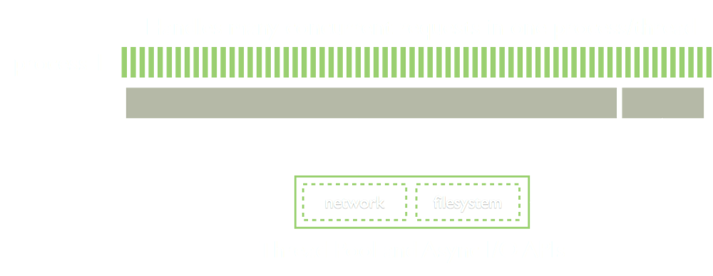
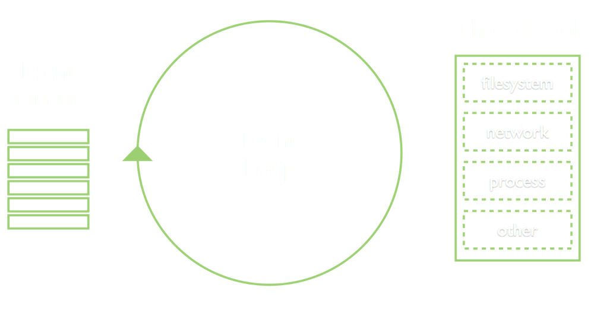

Node.js
Introduction
Created by @xjodoin
Heads Up
Node.js is a platform built on Chrome's JavaScript runtime for easily building fast, scalable network applications. Node.js uses an event-driven, non-blocking I/O model that makes it lightweight and efficient, perfect for data-intensive real-time applications that run across distributed devices.
History
- 2009 - Ryan Dahl, JSConf EU, Joyent
- 2010 - v0.2 "stable-ish"
- 2/2011 - v0.4 "stuff works"
- 11/2011 - v0.6 "stuff works on windows"
- 6/2012 - v0.8 "stuff works better"
I/O Latency
- L1: 3 cycles
- L2: 14 cycles
- RAM: 250 cycles
- DISK: 41,000,000 cycles
- NETWORK: 240,000,000 cycles
Source: Ryan Dahl’s 2008.11.08 node.js presentation
Waiting...

Scale with Threads

Scale with Event Loop

Node.js Event Loop

Design principles
Callbacks
No function should perform i/o directly.
To receive info from disk, network, or another process there must be a callback
Code
var http = require('http');
var fs = require('fs');
var server = http.createServer(function (req, res) {
fs.readFile(__dirname + '/data.txt', function (err, data) {
res.end(data);
});
});
server.listen(8000);
Streams
Stream everything. never force the buffering of data
Code
var http = require('http');
var fs = require('fs');
var server = http.createServer(function (req, res) {
var stream = fs.createReadStream(__dirname + '/data.txt');
stream.pipe(res);
});
server.listen(8000);
Challenges
- Asynchronous I/O
- Debugging
- CPU-intensive Tasks
Benefits
- Multi-Platform
- Dead-lock Free
single thread simplifies concurrency
- Monoglot Programming
Javascript client/server
- Fast
Vibrant Community

Total Packages: 55 720